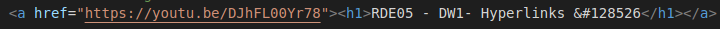
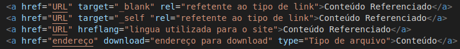
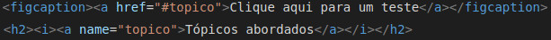
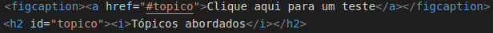
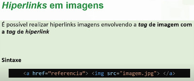

Hyperlinks
Tópicos
- Hyperlinks ou links:
- Link remotos ou externos
- Incrementos no link
- Link interno
- Link local
- Link em imagem
- Link para download
- Link para email
Hyperlinks ou links

Como ocorre a marcação de links:
 O "a" significa que a tag será ancorada com algun link, esse link pode ser de varios tipo, como o
link local ou remoto.
O "a" significa que a tag será ancorada com algun link, esse link pode ser de varios tipo, como o
link local ou remoto.
Exemplo:

Links remotos ou externos

Incrementos no link
os incrementos são comandos a mais para trazer melhor uso do link

Exemplos de incrementos
O "_blank" serve para abrir a URL em outra guia quando clicar, o "_self" serve
para abrir na mesma guia.
O "download" é para se colocar o nome do arquivo, esse nome vai aparecer quando o usuario for
fazer o download.
Link Interno

Existem dois tipos diferentes de se fazer um link interno
- Um deles é por meio de um link com a ancora

- O outro é por meio de id

Link Local
È utilizado para fazer web sites com varias paginas
Link em imagem

Pode ser usado para fazer algo quando clicar na imagem, deixar ela maior ou fazer download.
(Exemplo:clique na imagem acima)
Link para download

Link para endereço eletrônico
 Email de contato: amanda.obarcote@gmail.com
Email de contato: amanda.obarcote@gmail.com